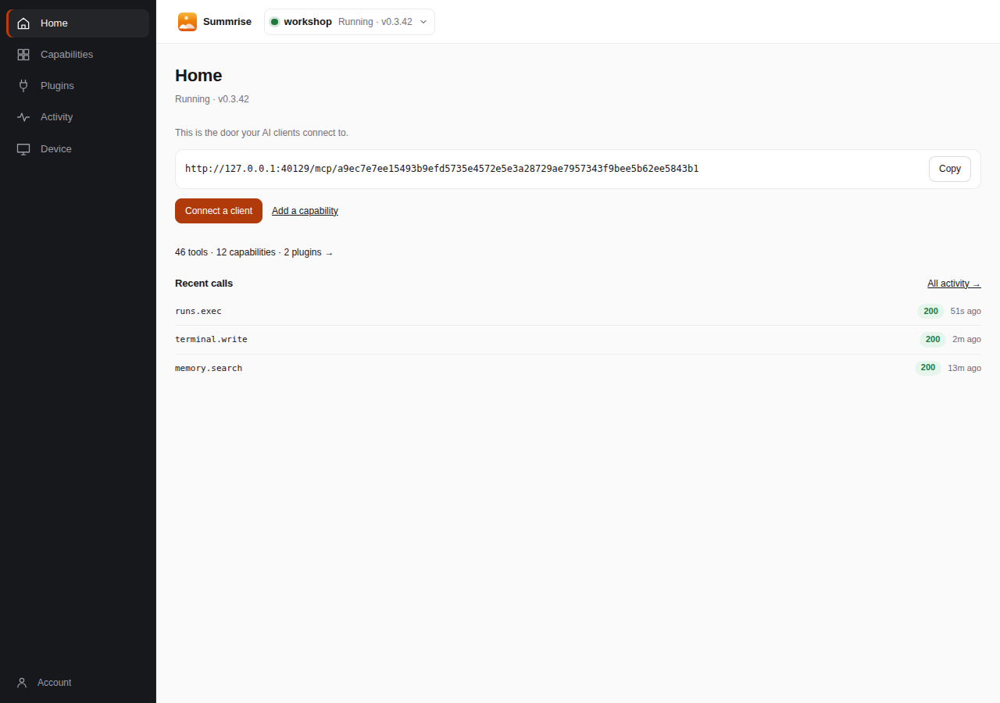

The console's Home: one machine's door, what it can do, and what was just called. The five destinations are Home, Capabilities, Plugins, Activity and Device.
Hands that work on install. A door that opens wider.
Real hands, on install
Terminal, SSH and serial sessions; Chrome on the device’s own network and profile; files under a declared root. Built in — no plugin, no Node runtime, no cloud VM between the agent and the machine.
One door for every client
One MCP endpoint per machine. Any streamable-HTTP client connects; the built-ins come first, and a plugin’s tools appear behind the same door, under the same token, in the same record.
A plugin is an MCP server
Install one from a directory you trust. The hub starts it as a child, namespaces its tools, and runs it with this machine’s privileges. v1 has no sandbox, signature or marketplace — and says so where you install.
Record and brake
Every call leaves an audit row: what, on which machine, under which token, with what result. Revoke the token, or open the machine’s own terminal and take the keyboard back.
See every call. Take the keyboard back.
From anywhere
Devices dial out over one WebSocket; nothing listens inbound by default, and there is no per-device tunnel. Access in front, the operator token behind, the record and the brake inside.
- Recordevery call: what, on which machine, under which token, with what result
- Brakea token names its tools and whether they can change the machine; revoke it in one action
- Handsopen the same machine’s terminal or screen from Device and take over
On the box
Loopback only, no login. The surface that still works when the console does not — and the only one that can say why the channel is down.
- Statesessions, install, last verdict, channel health
- Enrolpaste the code, replace a lost enrolment
- Repairread the last failure, and why the channel is down
Run it on the machine you already have.
Windows 10/11 · x64. The installer puts the service in place; the signed release document lets the device update itself and still prove where the bytes came from. The console is the window, and the free path stays free.